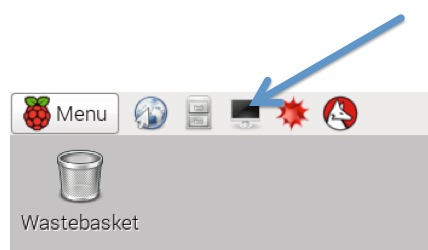

In this workshop you will use the Raspberry Pi (RPi) to control a board that contains
This workshop will show you how to:
> The commands for you to type, or text you will see in the Linux Terminal, are in this bold text, and have a > at the beginning (don't type this)
Logging into the Raspberry Pi:
When the RPi starts up you will be prompted to log in. The details are:> User: pi > Password: raspberry
Getting a graphical desktop:
Once you have logged in you will need to start the graphical desktop. This can be done by typing;
> startx
Getting a Linux command prompt:
Once the desktop has started click on the menus to open an "LXTerminal" which is a Linux command prompt window.

Some basic Linux commands:
Change to the directory where the Python libraries are that we will use;
> cd python/GPS
This is where we will run our python script from; more on this in a minute.
To list the contents of the is directory type;
> ls
To be able to see the sizes of the files in human readable format, type;
> ls -lh
Starting the Python Integrated Development Environment (idle):
On the command line type;
> sudo idle -e myGPS.py
"sudo" means we are running as a Super User which we will need so that we have access to the GPIO pins. myGPS.py is the name of the file where we will store our code.
Python scripts can import code from modules. It is customary but not required to place all import statements at the beginning of a script. Sometimes we will import whole modules and at other times we will just import certain functions from a module e.g. the sleep function from within the time module.
We are going to use a while loop to continuously repeat our code. So we can break out of the loop with some degree of control we are going to use "try, except and finally" functionality of Python to capture us breaking out of the loop with a CTRL-C and tidy up before we exit the script.
We are going to instantiate objects such as BTN (button), LD1 (LED 1), LD2 (LED 2), GPS1 (GPS device) and DISP (display on the circuit board). This will allow us to read attributes and methods of those objects.
Now enter the following code into the IDLE text editor you started. This is the code for a distance calculator that will run on the circuit board using the RPi and the CSR GPS chip.
# Standard Python Imports
from time import sleep
from math import hypot
# Raspberry-Pi specific imports
# Provides interface to GPIO pins
import RPi.GPIO as GPIO
# Library for CSR GPS board
import H13467
# Library for 4tronix Display Dongle
import IPD
if __name__ == '__main__':
GPIO.setmode(GPIO.BCM) # Pin naming mode
GPS1 = H13467.GPS(18, 22) # Create GPS object
BTN = H13467.BUT(23) # Button Object
LD2 = H13467.LED(24) # LED 2 Object
LD1 = H13467.LED(25) # Create Object for LED 1
DISP = IPD.IPD() # 4-digit 7-Segment display opbject
# Create variables for storing coordinates and distance
N1 = 0
N2 = 0
E1 = 0
E2 = 0
dist = 0
# Boolean variable
needRef = True
print 'Use CTRL-C to end loop'
try:
while 1:
# Test for button press
if BTN.get_count() == 0:
# Use LEDs to show change
LD1.off()
LD2.off()
if needRef:
# Get reference coordinates
E1 = GPS1.utm_east
N1 = GPS1.utm_north
needRef = False
# Get current position
E2 = GPS1.utm_east
N2 = GPS1.utm_north
# Use Pythagoras Theorem to find distance
dist = hypot(N1 - N2, E1 - E2)
# Show on display
DISP.show_msg('{0}'.format(int(dist)))
# Print debug statements
print '{0}'.format(int(dist))
if BTN.get_count() == 1:
# Use LEDs to show change
LD1.on()
LD2.off()
# Show last distance calculation and precision of GPS
DISP.show_msg('{0}P{1}'.format(int(dist), int(GPS1.precision)))
# print debug statements
print 'n1 = {0}'.format(N1)
print 'n2 = {0}'.format(N2)
print 'e1 = {0}'.format(E1)
print 'e2 = {0}'.format(E2)
print '{0} P{1}'.format(int(dist), int(GPS1.precision))
# Tell code it will need a new reference point
# on next button press
needRef = True
if BTN.get_count() > 1:
print 'Reset button count'
needRef = True
BTN.count = 0
# Wait 1.5 seconds before updating
sleep(1.5)
except KeyboardInterrupt:
print '\nInterrupt caught'
finally:
print 'Tidy up before exit'
DISP.clear_display()
GPS1.data_stop()
GPS1.pulse_on_off()
When you are ready to run your code;
When you run this code you will see output on your monitor (from the "print" statements in the code), and also on the display on the circuit board (from the DISP.setMsg statements in the code).
Debugging your code means to test it and find any errors that prevent it running as you would like it to, or in fact not running at all!
Debugging tips;
Before taking our build outside:
Before we can take hardware outside we need to ensure our code will run automatically as we will not have a screen and keyboard outside. We will make this happen by using the Linux capabilities of "crontab". Crontab executes scripts at specific times or in our case, at boot up. To edit the crontab use the following command on the Linux prompt;
> crontab -e
And add the following line to the file;
@reboot sudo python /home/pi/python/GPS/myGPS.py
Make sure that the file name is the same as the one you saved your work in. Save the changes to the crontab.
Tip: there are command instructions at the bottom of the crontab window showing you how to save this. ^ in Linux means the Ctrl button so ^O means hold down the Ctrl button and press O.
Once you have finished debugging your code, and updated the crontab then we can take our hardware outside.
What will you measure?
If you finish building the tape measure maybe you want to create some new code to display other properties of the GPS module.
There is a method in the GPS class to get the time with a local time offset. This
method is called get_local_clock().
Here is an example of how this function might be used:
gps_time = GPS1.get_local_clock()
print 'Show time: {0}'.format(gps_time)
DISP.show_clock(gps_time)
To show the time on the display we recommend using show_clock() rather than
show_msg() as this will give you a colon ":" between the hours and minutes.
The time by default will be GMT so if we were on BST you would need to change the
time zone with the set_time_zone_offset method. An example of this is:
GPS1.set_time_zone_offset(1)
The GPS module stores how many GPS and GLONASS satellites are in view (siv) in
the variables gps_siv and glo_siv respectively.
You may want to show this information on your display. An example of getting and
displaying these variables is:
print 'Show satellite count {0:02}:{1:02}'.format(GPS1.gps_siv, GPS1.glo_siv)
DISP.show_clock('{0:02}{1:02}'.format(GPS1.gps_siv, GPS1.glo_siv))
In this example we have used the show_clock method so that we get the colon
between the two numbers. You can also use the show_msg command.
The GPS module stores the direction it calculates we are travelling with respect to
true north in a variable called cog. This is an integer in degrees clockwise from true
north.
An example of how to retrieve and display this is:
print 'Show Course over Ground: {0}'.format(GPS1.cog)
DISP.show_msg('{0}'.format(GPS1.cog))
The GPS module stores the altitude in a variable called alt_msl. MSL stands for Mean
Sea Level. MSL is defined as the zero elevation for a local area. Unfortunately for
mapmakers, sea level is not a simple surface as the sea surface conforms to the earth's
gravitational field so there is a lively debate about what should be the zero elevation.
We shall ignore this for now and look to see what the reading is for where we are.
An example of how to retrieve and display this is:
print 'Show Altitude {0}'.format(GPS1.alt_msl)
DISP.show_msg('{0}'.format(GPS1.alt_msl))
For your reference the connections between the Raspberry Pi and the H13467 GNSS board are detailed below. The colour the cables are not important but which pins they go to are. The power supply (3V3) should be connected up last.
| GPS Board Pin Name | Raspberry Pi Pin Name |
|---|---|
| RX1 | TXD |
| TX1 | RXD |
| ON | 22 |
| LD1 | 25 |
| LD2 | 24 |
| BTN | 23 |
| WAK | 18 |
| GND | GND |
| 3V3 | 3V3 |
| Display Pin Name | Raspberry Pi Pin Name |
|---|---|
| GND | GND |
| SCL | 3 |
| SDA | 2 |
| 5V | 5V |